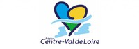
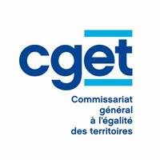
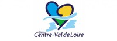
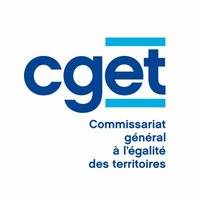

Le CASA - Collectif Associatif Saint Amandois - a été créée en 1997. Il s'agit d'une association de loi de 1901 à but non lucratif
Il accueille des adultes et de jeunes élèves afin de leur apporter une aide dans différents domaines tels que le soutien scolaire, des cours de langue, la préparation aux concours, la vie en société et autres activités associées
Équipe composée de 9 personnes
Une vingtaine de bénévoles et une personne en service civique participent aux actions du CASA
3 salariées participent aux actions du CASA
 


